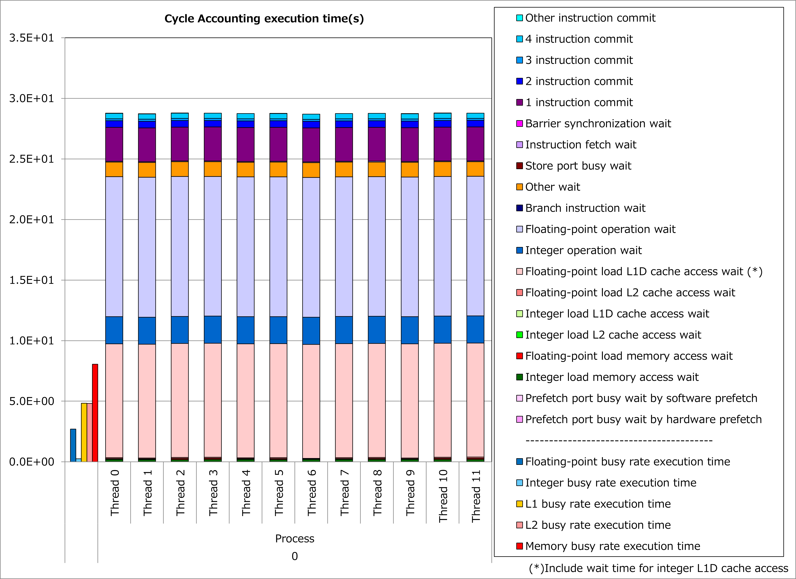
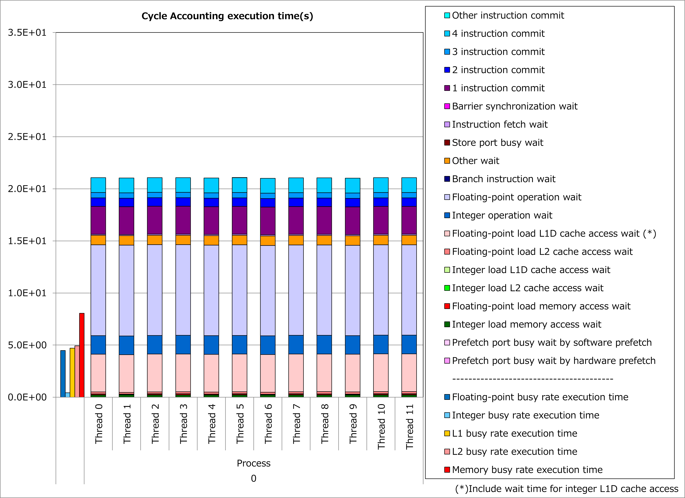

3.2. 少回転最内ループのループストライピング¶
3.2.1. 動機¶
富士通Fortran/C/C++コンパイラはA64FXプロセッサの性能を引き出すために、ソフトウェアパイプライニングの最適化を活用します。 ただしソフトウェアパイプライニングでは、ループの異なる複数イタレーションの演算を重ねて実行するため、対象ループの繰り返し数が少ない場合、最適化の効果が発揮されない場合があります。
そこで、ソースプログラムにstripingの最適化制御行(OCL)を挿入することによって、以下に示すような ループストライピングの最適化をコンパイラに指示 できるケースがあります。
DO i = 1, n
a(i) = b(i) + c(i)
END DO
DO i = 1, n, 2
tmp_b1 = b(i)
tmp_b2 = b(i+1)
tmp_c1 = c(i)
tmp_c2 = c(i+1)
tmp_a1 = tmp_b1 + bmp_c1
tmp_a2 = tmp_b2 + tmp_c2
a(i) = tmp_a1
a(i+1) = tmp_a2
END DO
その結果、ループの繰り返し数が少ない場合でも、異なるイタレーションの演算が重ねて実行されて、実行時間を短縮できる可能性があります。
3.2.2. 適用例¶
A64FX向けチューニング技術検討会 で示されたコード例を用いて、性能改善の例を以下に示します。 この例では、繰り返し数が比較的少ない変数jjのforループに対して、stripingの最適化制御行を適用しています。
#pragma loop norecurrence
for (int jj = 0; jj < jnum; jj++) {
flt_t forcelj, evdwl;
forcelj = evdwl = (flt_t)0.0;
int j, jtype, sbindex;
if (!ONETYPE) {
sbindex = jlist[jj] >> SBBITS & 3;
j = jlist[jj] & NEIGHMASK;
} else
j = jlist[jj];
const flt_t delx = xtmp - x[j].x;
const flt_t dely = ytmp - x[j].y;
const flt_t delz = ztmp - x[j].z;
if (!ONETYPE) {
jtype = x[j].w;
cutsq = ljc12oi[jtype].cutsq;
}
const flt_t rsq = delx * delx + dely * dely + delz * delz;
flt_t factor_lj;
if (!ONETYPE) factor_lj = special_lj[sbindex];
flt_t r2inv = 1.0 / rsq;
flt_t r6inv = r2inv * r2inv * r2inv;
if (rsq > cutsq) r6inv = (flt_t)0.0;
if (!ONETYPE) {
lj1 = ljc12oi[jtype].lj1;
lj2 = ljc12oi[jtype].lj2;
}
forcelj = r6inv * (lj1 * r6inv - lj2);
flt_t fpair;
if (!ONETYPE)
fpair = factor_lj * forcelj * r2inv;
else
fpair = forcelj * r2inv;
const flt_t fpx = fpair * delx;
fxtmp += fpx;
if (NEWTON_PAIR) f[j].x -= fpx;
const flt_t fpy = fpair * dely;
fytmp += fpy;
if (NEWTON_PAIR) f[j].y -= fpy;
const flt_t fpz = fpair * delz;
fztmp += fpz;
if (NEWTON_PAIR) f[j].z -= fpz;
if (EFLAG) {
if (!ONETYPE) {
lj3 = lj34i[jtype].lj3;
lj4 = lj34i[jtype].lj4;
offset = ljc12oi[jtype].offset;
}
evdwl = r6inv * (lj3 * r6inv - lj4);
if (rsq < cutsq) evdwl -= offset;
if (!ONETYPE) evdwl *= factor_lj;
sevdwl += evdwl;
if (eatom) {
fwtmp += (flt_t)0.5 * evdwl;
if (NEWTON_PAIR)
f[j].w += (flt_t)0.5 * evdwl;
}
}
if (NEWTON_PAIR == 0)
IP_PRE_ev_tally_nborv(vflag, delx, dely, delz, fpx, fpy, fpz);
}
#pragma loop norecurrence
#pragma loop striping 2
for (int jj = 0; jj < jnum; jj++) {
...
}
改善前および改善後コードのサイクルアカウンティング測定結果を下記グラフに示します。 なお、性能測定条件は以下のとおりです。
ONETYPE =1、EFLAG = 0、NEWTON_PAIR = 1、jnum = 26～49 (平均37.5)
改善前(左のグラフ)に対して改善後(右のグラフ)の測定結果では、浮動小数点演算待ち時間やL1Dキャッシュアクセス待ち時間が減少し、実行時間が27%減ったことが分かります。 なおこの例では、非連続的な配列アクセスが多く含まれるために、L1Dキャッシュアクセス待ち時間も削減されたと考えられます。
 {kind=link}
{kind=link}
3.2.3. 実例¶
A64FX向けチューニング技術検討会 にて、この種の事例が以下のとおり紹介されています。
3.2.4. 参考資料¶
注意: 上記ドキュメントの参照には スーパーコンピュータ「富岳」利用者ポータル のアクセス権が必要です。